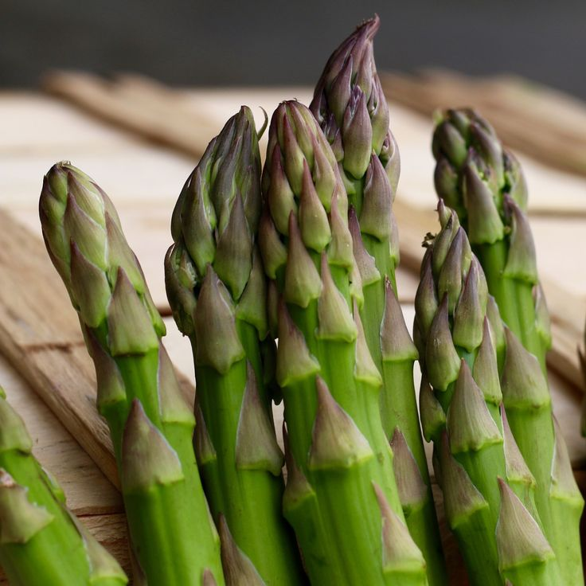

농작물 명칭: 아스파라거스
- 품종 특징 : - 그린아스파라거스 -
-
재배환경 시설재배 : 아스파라거스 시설 재배는 16~25°C의 온도 유지와 비가림 설비를 통한 병해 예방이 핵심이며
배수가 잘되는 사양토에 점적 관수 시설을 갖추는 것이 중요합니다.
환경재배 : 16~25°C의 온화한 기후와 햇빛이 잘 드는 환경을 조성하고, 물 빠짐이 좋은 비옥한 사양토(pH 6.0~6.5)를 유지하는 것이 핵심입니다.
유통 구조 설계
생산자(나) → 로컬푸드 직매장 → 최종 소비자
- 물류 방식 : 저온유통(cold chain)
- 판매 전략: 직거래 / 온라인 마켓 등